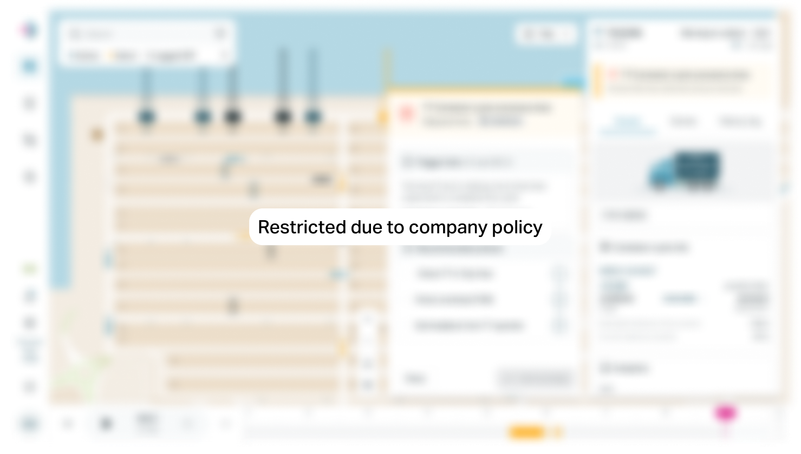
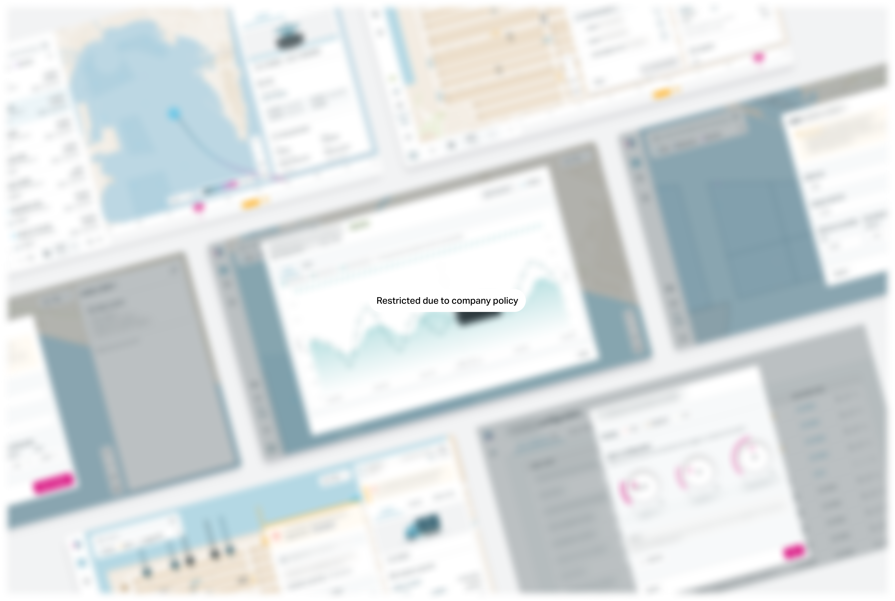

I led the end-to-end design of NextPort, Moffatt & Nichol’s Technology & Innovation platform for maritime operations. I worked with the team to translate user and market needs into core product workflows and build the design system that ties them together.
Role
Senior Product Designer · Product design lead
Timeline
2022–2026
Scope
Maritime AI SaaS · Research · Platform UX · Design system · 3D design direction
Berth Planner shows predicted and confirmed slots on one schedule.
FlowOps. The alarms list groups the information needed to respond.
01 / Product direction
Start with decisions port teams make every day.
Port teams work with live vessel movements, schedules, assets and alerts. They need to know what’s happening, what’s likely to change and where they can act. I used research, interviews and usability testing to shape the product around those decisions.
Top View
The port’s digital twin brings vessels, resources and services into a live map. Selecting a vessel reveals its speed, route and status, along with a timeline of arrivals, departures and anchorage. I combined confirmed events with predicted ETAs and delays, and designed playback for past and forecast states.
Terminal map
Supervisors can zoom in to track quay cranes, yard cranes and trucks. Color-coded equipment states and alarms appear in context, and the shared playback timeline lets teams revisit a moment in the operation.
Port Call Schedule
The board separates arrivals, vessels in port and departures so teams can scan the day. I also designed a table view and surfaced weather alerts alongside the schedule so the conditions affecting berthing decisions stay visible.
Terminal map. Equipment states and alarms appear where the assets are working.Port Call Schedule. Cards summarize routes, visit status and timing, with local conditions at the top of the board.
02 / Planning with AI
Make predictions easy to compare and question.
Berth Planner
Planners can allocate visits across every berth by day, week or month, with a queue that keeps unallocated vessels visible. The Predictions toggle overlays AI-suggested slots on the confirmed schedule. I used dashed outlines to make the suggestions distinguishable at a glance.
Trade Off
Vessels often compete for berths, tugboats and anchorage. I laid past and future movements on a shared timeline and added a filter for conflicts that need attention. Planners can inspect the constraints behind an AI recommendation before committing to a change.
Berth Planner shows predicted and confirmed slots on one schedule.Trade Off makes the constraints behind berthing recommendations visible.
03 / Platform design
Give every module a shared design language.
I built the design system alongside the product. I streamlined navigation around port tasks and created a reusable component library so the team could build features from shared patterns, including accessible interactions and semantic colors for operational states.
Interviews, observed workflows, usability testing and user feedback shaped the experience framework. Across maps, planning tools and dashboards, I used a consistent visual language to keep complex tasks easier to scan and complete.
Color tokens and semantic palettes from the design system.

Original UX framework visual, with the company-policy redaction applied.

Original platform overview, with the company-policy redaction applied.
04 / 3D design direction
Directing the digital twin’s 3D design.
I led the 3D design of NextPort’s digital twin, working in collaboration with an external company.
I designed real-time dashboards around the needs of different roles. Custom layouts and modular widgets let each user prioritize the metrics relevant to their work. The asset performance view breaks down productive and nonproductive time so teams can look for root causes.
FlowOps
I put alarm priority, elapsed time and assigned role together so each alert has an owner and teams can decide what needs attention first. Historical views support review after an event, and configurable rules let teams tune what triggers an alert.
LeanIQ Analyzer. Asset efficiency gauges and a root-cause breakdown in the same view.FlowOps. The alarms list groups the information needed to respond.
06 / Design process
Adapt the process to how ports work.
I took the team from discovery to testing and iteration. Research helped us understand the realities of port operations, and prototypes let us test how people would use the product before committing to a design.
Research
Discovery, user interviews, surveys, analytics and competitive analysis.
Definition
Personas, journey maps, problem statements and card sorting.
Ideation
Brainstorming, sketching, information architecture and Crazy 8s.
Prototyping
Wireframes, high-fidelity prototypes and reusable design system components.
Testing
Usability testing with users, A/B testing and accessibility checks.
Iteration
Analytics review, feedback integration and performance metrics.
07 / Skills & tools
UX toolkit.
Tools. Figma, Adobe XD, Illustrator, Photoshop, Miro, Notion, Hotjar, Google Analytics, Lucky Orange and HTML/CSS.